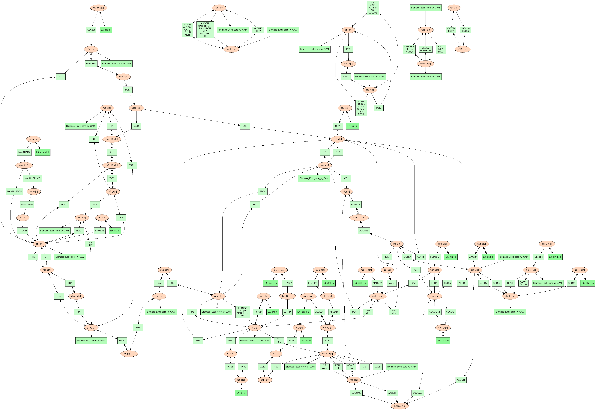
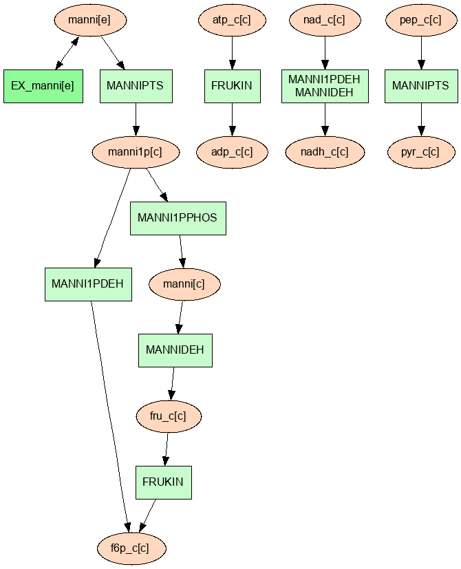
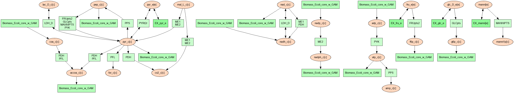
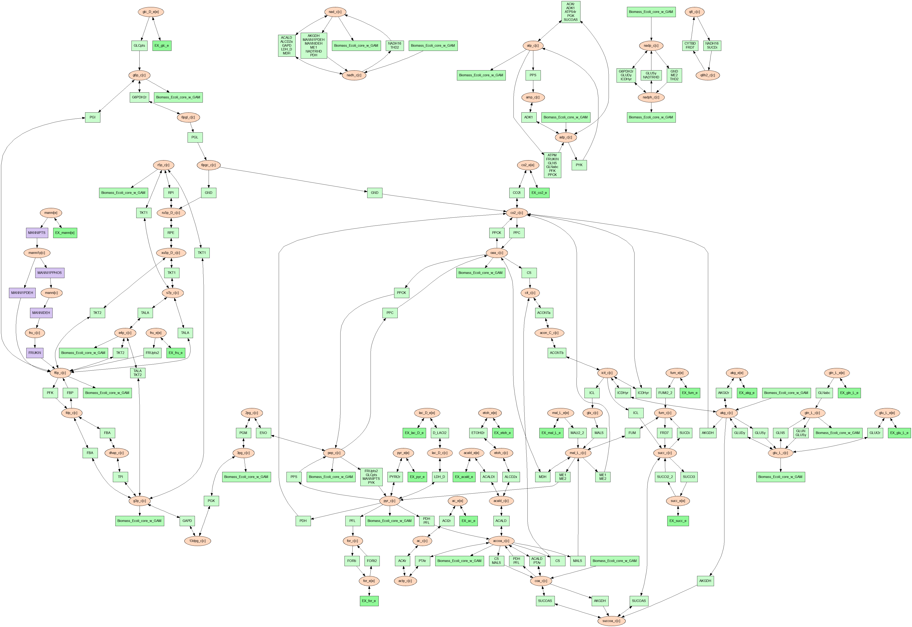
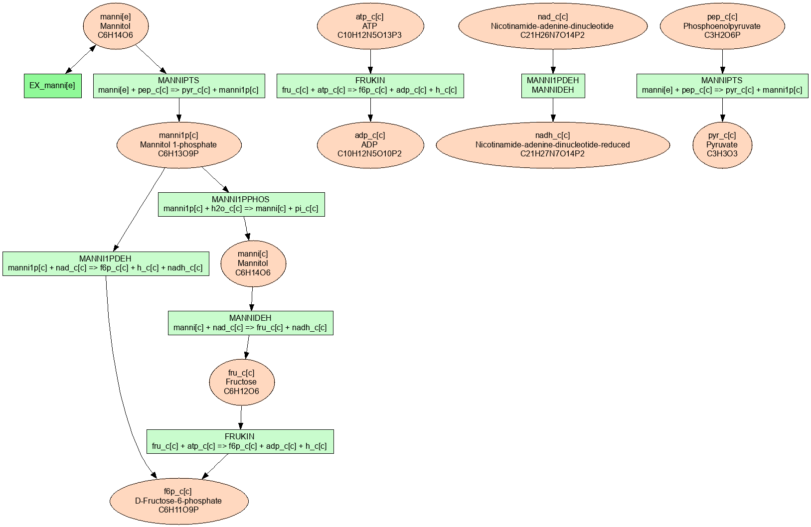
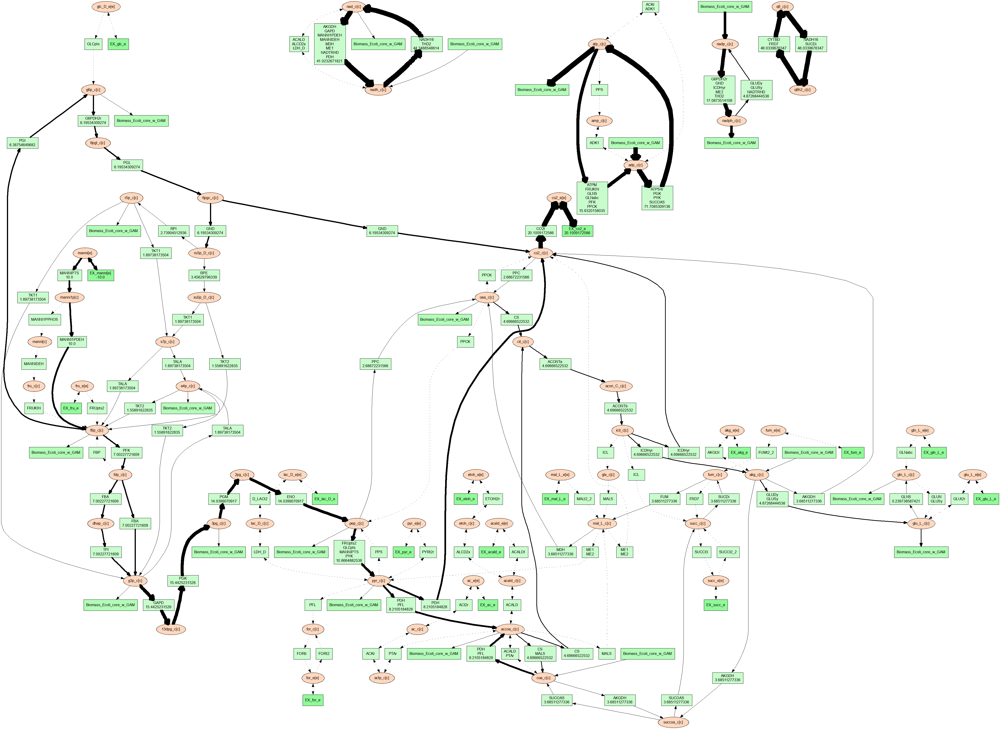
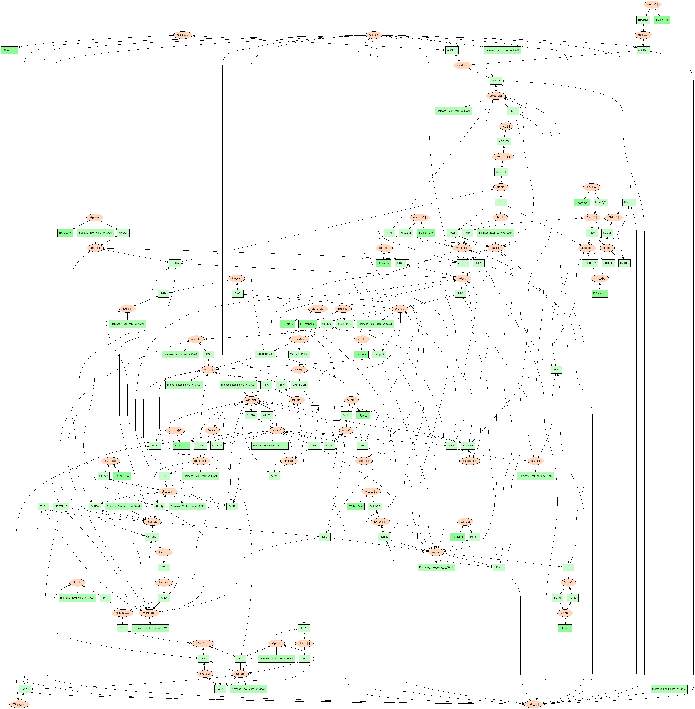

Reactant/Product Pair Prediction Using FindPrimaryPairs
This tutorial will go over how to use the primarypairs function in PSAMM to predict reactant/product pairs in genome scale models.
Materials
For information on how to install PSAMM and the associated requirements, as well how to download the materials required for this tutorial you can reference the Installation and Materials section of the tutorial.
In addition to the basic installation of PSAMM, the visualization function can use the Graphviz program to generate images from the text based graph format that will be generated by the vis command. Graphviz version > 0.8.4 must be installed, in addition the Graphviz python bindings must be installed in the working python environment.
Note
Graphviz download: https://www.graphviz.org/download/
Graphviz python bindings: https://pypi.org/project/graphviz/ or (psamm-env) $ pip install graphviz
For this part of the tutorial we will be using a modified version of the E. coli core metabolic models that has been used in the other sections of the tutorial. This model has been modified to add in a new pathways for the utilization of mannitol as a carbon source. To access this model and the other files needed you will need to go into the tutorial-part-4 folder located in the psamm-tutorial folder.
(psamm-env) $ cd <PATH>/tutorial-part-4/
Once in this folder you should see a folder called E_coli_yaml. inside of this folder is all of the data that will be needed to run the commands in this tutorial. Inside of this folder there will be a directory called E_coli_yaml/ that contains the E. coli core model, and a directory called additional_files/ that contains some additional input files that will be used in the visualization portion of the tutorial.
To run the following tutorials go into the E_coli_yaml/ directory:
(psamm-env) $ cd E_coli_yaml/
Reactant/Product Pair Prediction using PSAMM
Metabolism can be broken down into individual metabolic reactions which transfer elements between different metabolites. When looking at individual metabolic reactions it may be possible to derive the element transfer patterns just based on previous knowledge of the enzyme and biochemistry. Take the following reaction as an example:
Acetate + ATP <=> Acetyl-Phosphate + ADP
This reaction is catalyzed by the enzyme Acetate Kinase. In this reaction acetate is converted to acetyl-phosphate through the addition of a phosphate group from ATP. A basic understanding of phosphorylation and the biological role of ATP makes it possible to manually predict that the primary element transfers for non hydrogen elements are as follows:
While doing this for one or two simple reactions is possible, genome scale models often contain hundreds to thousands of reactions, making manual reactant/product pair prediction impractical. In addition to this, reaction mechanisms are often not known, and patterns of element transfer within reactions are not available for most metabolic reactions.
To address this problem the FindPrimaryPairs algorithm [CITATION for FPP PAPER] was developed and implemented within the new PSAMM function primarypairs.
The FindPrimaryPairs is an iterative algorithm which can be used to predict element transferring reactant/product pairs in genome scale models. FindPrimaryPairs relies on two sources of information which are generally available in genome scale models, reaction stoichiometry and metabolite formulas. From this information FindPrimaryPairs can make a global prediction of element transferring reactant/product pairs without any additional information about reaction mechanisms.
This kind of reactant/product pair prediction [[[importance statement]]]
Basic Use of the primarypairs Command
The primarypairs command in PSAMM can be used to perform an element transfering pair prediction using the FindPrimaryPairs algorithm. The basic command can be run like so:
(psamm-env) $ psamm-model primarypairs --exclude @./exclude.tsv
This function often requires a file to be provided through the --exclude option. This file is a single column list of reaction IDs, of any reactions that the user wants to remove from the model when doing the reactant/product pair prediction. Typically this file should contain any artificial reactions that might be in the model such as Biomass objective reactions, macromolecule synthesis reactions, etc. While these reactions can be left in the model, the fractional stoichiometries and presence of artificial metabolites in the reaction can cause the algorithm to take a much longer time to find a solution. In the case of this example with the E. coli core model the only reaction like this is the biomass reaction Biomass_Ecoli_core_w_GAM. And this is the only reaction listed in the exlcude.tsv file.
Note
The FindPrimaryPairs algorithm relies on metabolite formulas to make its reactant/product pair predictions. If any reactions contain metabolites that do not have any they will automatically be excluded from the primary pair prediction.
When the above command is run the output will look like the following:
INFO: Model: Ecoli_core_model INFO: Model version: 3ac8db4 INFO: Using default element weights for fpp: C=1, H=0, *=0.82 INFO: Iteration 1: 79 reactions... INFO: Iteration 2: 79 reactions... INFO: Iteration 3: 8 reactions... GLNS nh4_c[c] h_c[c] H FBA fdp_c[c] g3p_c[c] C3H5O6P ME2 mal_L_c[c] nadph_c[c] H MANNI1PDEH manni1p[c] nadh_c[c] H PTAr accoa_c[c] coa_c[c] C21H32N7O16P3S ....
In the first few lines basic information about the model name and version are provided. In the next line the element weights used in the FindPrimaryPairs algorithm are listed (more on this below). Then, as the algorithm goes through multiple iterations it will print out the iteration number and how many reactions it is still trying to make a pair prediction for. After this information a four column table is then printed out that contains the following columns from left to right, Reaction ID, reactant ID, product ID, and elements transferred.
From this output the Acetate Kinase reaction from the above example can be looked at and compared to the manual prediction of the element transfer. The reaction ID for this reaction is ACKr:
ACKr atp_c[c] adp_c[c] C10H12N5O10P2 ACKr atp_c[c] actp_c[c] O3P ACKr ac_c[c] actp_c[c] C2H3O2
From this result it can be seen that the prediction contains the same three element transferring pairs as the above manual prediction; ATP -> ADP, ATP -> Acetyl-Phosphate, Acetate to Acetyl-Phosphate.
This basic usage of the primarypairs command will allow for quick accurate prediction of element transferring pairs in any of the reactions in a genome scale model, but the function also has a few additional options that can be used to refine and adjust how the pair prediction work and what it will produce as a result.
Modifying Element Weights
The metabolite pair prediction relies on a parameter called element weight to inform the algorithms about what chemical elements should be considered more or less important when determine metabolite similarity. An example of how this might be used can be seen in the default element weights that are reported when running primarypairs.
INFO: Using default element weights for fpp: C=1, H=0, *=0.82
These element weights are the default weights used when running primarypairs with the FindPrimaryPairs algorithm. In this case a weight of 1 is given to carbon. Because carbon forms the structural backbone of many metabolites this element is given the most weight. In contrast, hydrogen is not usually a major structural element within metabolites. This leads to a weight of 0 being given to hydrogen, meaning that it is not considered when comparing formulas between two metabolites. By default all other elements are given an intermediate weight of 0.82.
These default element weights can be adjusted using the --weights command line argument. For example, to adjust the weight of the element nitrogen while keeping the other elements the same as the default settings the following command could be used:
(psamm-env) $ psamm-model primarypairs --weights N=0.2,C=1,H=0,*=0.82 --exclude @./exclude.tsv
In the case of a small model like the E. coli core model the results of primarypairs will likely not change unless the weights are drastically altered. Changes could be seen in larger models though especially if the models include many reactions related to non-carbon metabolism such as sulfur or nitrogen metabolism.
Report Element
By default the primarypairs result is not filtered to show transfers of any specific element. In certain situations it might be desirable to only get a subset of these results based on if the reactant/product pair transfers a target element. To do this the option --report-element can be used. In many cases it might be desirable to only report carbon transferring reactant/product pairs, to do this run the following on the E. coli model.
(psamm-env) $ psamm-model primarypairs --report-element C --exclude @./exclude.tsv
If the predicted pairs are looked at for one of the mannitol pathway reactions, MANNIDEH, the following can be seen:
MANNIDEH manni[c] fru_c[c] C6H12O6 MANNIDEH nad_c[c] nadh_c[c] C21H26N7O14P2
If this result is compared to the results without the --report-element C option it can be seen that when there are additional transfers in this reaction but they only involve hydrogen.
MANNIDEH manni[c] nadh_c[c] H MANNIDEH manni[c] h_c[c] H MANNIDEH manni[c] fru_c[c] C6H12O6 MANNIDEH nad_c[c] nadh_c[c] C21H26N7O14P2
Pair Prediction Methods
Two reactant/product pair prediction algorithms are implemented in the PSAMM primarypairs command. The default algorithm is the FindPrimaryPairs algorithm. The other algorithm that is implemented is the Mapmaker algorithm. These algorithm can be chosen through the --method argument.
$ psammm-model primarypairs --method fpp or $ psamm-model primarypairs --method mapmaker
Visualizating Models using PSAMM
The vis function in PSAMM can be used to convert text based YAML models to graph based representations of the metabolism. The graph based representation contains two sets of nodes, with one set representing the metabolites in the model, and the other set representing reactions. These nodes are connected through edges that are determined based on element transfer patters predicted through using the FindPrimaryPairs algorithm. The vis function provides multiple options to customize the graph representation of the metabolism including, customized node labels, showing FBA results, and changing node colors.
Basic visualization
The basic vis function can be run through the following command:
(psamm-env) $ psamm-model vis
The basic visualization relies on the FindPrimaryPairs algorithm to predict element transfer in the metabolic network. This algorithm requires certain reactions such as biosynthesis reactions and other artificial reactions to be excluded from the algorithm's calculations in order to work efficiently. This can be done through the --exclude option. By default the biomass reaction that is specified in the model.yaml file will be excluded from the FPP calculation but will still be shown on the final graph image. For more information on on excluded reactions see :ref:`exclude-fpp`.
In this version of the E. coli core model the biomass reaction is defined in the model.yaml file so that it will be excluded automatically.
When running the above command three files will be produced called 'reaction.dot', 'reactions.edges.tsv', 'reactions.nodes.tsv'.
The first file, 'reactions.dot', contains a text based representation of the network graph in the 'dot' language. This graph language is used primarily by the Graphviz program to generate network images. This graph format contains information on the nodes and edges in the graph along with details related to the size, colors, and shapes that will be used in the final graph image.
The 'reactions.nodes.tsv', and 'reactions.edges.tsv' files are tab separated tables that contain the same information as the dot based graph does, but in a more generic table based format that can be used with other graph analysis and visualization software like Cytoscape.
The 'reactions.edges.tsv' file contains the information related to the structure of the graph. Each line in this table represents one edge in the graph and contains the source of that edge, destination of that edge, and the direction of the edge (forward, back, or both). This file will look like the following:
source target dir CS_3 cit_c[c] forward f6p_c[c] Biomass_Ecoli_core_w_GAM_5 forward ALCD2x_1 acald_c[c] both ...
The 'reacitons.nodes.tsv' file will contain all of the information related to what appears on the nodes in the graph. In this representation of the graph there both reactions nodes and compound nodes. This file will look like the following:
id compartment fillcolor shape style type label 13dpg_c[c] c #ffd8bf ellipse filled cpd 13dpg_c[c] 2pg_c[c] c #ffd8bf ellipse filled cpd 2pg_c[c] 3pg_c[c] c #ffd8bf ellipse filled cpd 3pg_c[c] 6pgc_c[c] c #ffd8bf ellipse filled cpd 6pgc_c[c]
Generating Image Files from text based Graphs
Images can be generated from the 'reactions.dot' file by using the Graphviz program. For the best representations of the metabolic network the dot layout is recommended. The image file can be generated as a PDF file by using the following Graphviz program command:
(psamm-env) $ dot -O Tpdf reactions.dot
This can also be done at the same time as the vis command step by adding the --image option with an image format (pdf, svg, eps, etc.) to the command:
(psamm-env) $ psamm-model vis --Image pdf
These commands will generate an image file called 'reactions.dot.pdf'. This image file is the representation of what was in the 'reactions.dot' file. This graph will look like:
In this default version of the graph there are two sets of nodes: circular orange nodes representing metabolites and rectangular green nodes representing reactions. These nodes are connected by edges that will show the direction of the reaction in the original metabolic model. This graph also contains some reaction nodes that have multiple reaction IDs. These represent reactions that contain common reactant/product pairs such as ATP/ADP.
The rest of the tutorial will deal with how to alter the graph representation from this default format to show different aspects of the metabolism and customize the look and content of the graph. For these sections, the mannitol utilization pathway that has been added and used in the previous tutorial sections will be used as an example.
Representing Different Element Flows
By default the vis command will produce a graph that shows the carbon transfers in the metabolic network. In the primarypairs tutorial section above the element transfers in the ACKr reaction were examined to see how the FPP algorithm would predict element transfer patterns. The vis command will use the information in these element transfer predictions to filter the graph that is made to only show certain edges. In the case of the ACKr reaction, if the element being shown is carbon then only the 'Acetate -> Acetyl-Phosphate' and 'ATP -> ADP' edges would be shown in the final graph. The 'ATP -> Acetyl-Phosphate' edge will not be shown in the draft becuase that element transfer only contains phosphate and oxygen.
This type of element filtering can provide different views of the metabolic network by showing how metabolic pathways transfer different elements through the reactions. The mannitol utilization pathway that was added to the model contains a multiple step pathway that converts extracellular mannitol to fructose 6-phosphate. This pathway also involves multiple phosphorylation and dephosphorylation steps. The --element argument can be added to the the vis command to filter this pathway to show the transfer patterns of the phosphorous in the pathway:
(psamm-model) $ psamm-model vis --element P --Image pdf
The resulting 'reactions.dot.pdf' file will contain the phosphorous transfer network of the E. coli core model.
If the mannitol utilization pathway is examined more closely it will be seen that the transfers are different from the original and involve transfers between metabolites like phosphate (pi[c]) that are typically filtered out of the carbon only graph.

Showing Cellular Compartments
GEMs often contain some representation of cellular compartments. At the most basic level this might just include an intracellular and extracellular compartment, but in more complex models additional compartments such as the periplasm in bacteria or the mitochondria in eukaryotes can be included to represent more complex metabolic processes. The vis command can show these compartments in the final image through the use of the --compartment argument. If the compartment information is not defined in the model.yaml file then the the command will attempt to automatically detect the organization of the compartments by examining the reaction equations in the model. This process cannot always accurately predict the compartment organization though. To overcome this problem it is better to define the compartment organization in the model.yaml file. This can be done by adding a new compartments sections into the model.yaml file like so:
name: Ecoli_core_model biomass: Biomass_Ecoli_core_w_GAM default_flux_limit: 1000 extracellular: e compartments: - id: c adjacent_to: e name: Cytoplasm - id: e adjacent_to: e name: Extracellular ....
The first thing to define is the extracellular compartment through the line 'extracellular: {id}'. This will tell PSAMM what the outermost compartment is in the model. The next thing to define is the compartments section. In this section each compartment can be defined with an id, a name, and a list of compartments that are adjacent to that compartment.
Once this information is added to the model.yaml file the following command can be used to generate an image that shows the compartment information of the model:
(psamm-env) $ psamm-model vis --compartment --Image
This command will produce an additional file called 'reactions_compartmentalized.dot' and a new image file 'reactions_compartmentalized.dot.pdf' in addition to the other files that are normally made. The 'reactions_compartmentalized.dot.pdf' image will look like this:

In this image there will be two compartments that are labeled with 'e' and 'c'. The E. coli core model is relatively small, meaning that the compartment organization is simple, but the vis command can handle more complex models as well. For example the following image was made using a toy model to show a more complex compartments organization.

Visualizing Reactions and Pathways of Interest
In some situations it might be better to only visualize a subset of a larger model so that smaller subsystems can be examined in more detail. This can be done through the --subset argument. this argument will take an input of a single column file where each line contains either a reaction ID or a metabolite ID. The whole file can only contain reaction IDs or metabolite IDs and cannot be a mix of both in the same subset file.
To use this command to make a subset of the reactions from the model that are involved in the mannitol utilization pathway the following command can be used:
(psamm-env) $ psamm-model vis --subset ../additional_files/subset_mannitol_pathway --Image pdf
The input file subset_mannitol_pathway looks like this:
MANNIPTS MANNI1PDEH MADNNIDEH MANNII1PPHOS FRUKIN
This subset image will look like the following:
In this image only the reactions directly listed in the subset file are included in the final image.
The other option for using the subset argument is to provide a list of metabolite IDs. This option will generate an image containing all of the reactions that the given metabolites are involved in. For example the following subset file could be used to generate a network image that contains all of the reactions involving pyruvate in this model.
pyr_c[c] pyr_e[e]
To use this subset in to generate the pyruvate related subnetwork use the following command:
(psamm-env) $ psamm-model vis --subset ../additional_files/subset_pyruvate_list --Image pdf
This will generate an image like the following that only shows the reactions that contain the pyruvate metabolite:
Highlighting reactions and Metabolites in the Network
The --subset argument can be used to show only a specific part of the network. When this is done the context of those reactions that are shown is often lost and it can be hard to tell where that pathway fits withing the larger metabolism. A different way to highlight a set of reactions without using the --subset option is to change the color of a set of nodes through the --color argument.
This argument can be used to change the color of the reaction or metabolite nodes on the final graph, making it easy to highlight certain pathways while still maintaining the larger metabolic context. This --color argument will take a two column file that contains reaction or metabolite IDs in the first column and hex color codes in the second column. A color file that can be used to color all of the mannitol utilization pathway reactions purple would look like the following:
MANNIPTS #d6c4f2 MANNI1PDEH #d6c4f2 MANNIDEH #d6c4f2 MANNI1PPHOS #d6c4f2 FRUKIN #d6c4f2
To use this file to generate an image of the larger network with the mannitol utilization pathway highlighted use the following command:
(psamm-env) $ vis --color ../additional_files/color_mannitol_pathway --Image pdf
The resulting image file should look like the following:
Coloring of specific nodes like this can make it easy to locate or highlight specific pathways especially in larger models.
Modify Node Labels in Network Images
By default only the reaction IDs or metabolite IDs are shown on the nodes in the final network images. These labels can be modified to include any additional information defined in the compounds or reactions file through the use of the --cpd-detail and --rxn-detail arguments. These arguments can be followed by a space separated list of properties such as id, name, equation, and formula which will be included on the node labels in the final image. To apply these options to the model to show the ID, names, and formulas for the metabolites and the ID and equation for reactions the following command can be used:
(psamm-env) $ psamm-model vis --subset ../additional_files/subset_mannitol_pathway --cpd-detail id name formula --rxn-detail id genes equation --Image pdf
The image generated will look like this:
For these options if a detail is provided that is not a property of the reaction or compound then that property will be skipped and not included on those nodes. For example if the formula property is given to the -rxn-detail option then that property will be skipped.
Showing Reaction Fluxes on Pathway Images
Flux Balance analysis can be used to simulate reaction fluxes in a metabolic model. These flux values can be used to modify the edges on pathway images to provide a different way to look at and help interpret these flux results. This can be done easily through the --fba option. When using this option a l1min fba will be run maximizing the biomass reaction of the model. The reaction fluxes will then be used to adjust the width of the edges in the graph. Thicker edges will represent larger flux values and reactions that carry no flux will be shown as dashed lines. This can be done through the following command:
(psamm-env) $ psamm-model vis --fba
Other Visualization Options
Splitting Condensed Nodes
By default the vis command will combined reaction nodes that have the same reactant/product pairs. This is often seen with reactant/product pairs like ATP/ADP and NADH/NADH. When these nodes are condensed they will not have the any modifications through the --color, --rxn-detail, or --cpd-detail arguments shown on the final image. To get these modifications to be shown on the final image, these combined nodes can be split using the --split argument. An example of this can be seen with the following command which will allow for the the coloring of nodes that would normally be condensed:
(psamm-env) $ psamm-model vis --color ../additional_files/color_mannitol_pathway --split --Image pdf

Removing Specific Reactant Product Pairs
Larger scale models may have some reactant/product pairs that occur many times in different reactions. These often involve currency metabolites like ATP, ADP, NAD, and NADH. Due to the number of times that these pairs occur across the network they can cause some parts of the graph to look messy. While making the condensed reaction nodes helps with this problem, there may be cases where it would be better to hide these edges in the final result. To do this the --hide-edges argument can be used. This argument takes a two column file where each row contains reaction IDs where the edges between them will be hidden.
Note
Needs better example. perhaps with a combined image like was done with the element transfers example.
Adjusting Image Size
The size of the final image file that is produced through the vis command can be adjusted through the --image-size argument. This argument will take the width and height (in inches) separated by a comma. The following command can be used to generate an image that is 8.5 inches x 11 inches:
(psamm-env) $ psamm-model vis --Image pdf --image-size 8.5,11
Changing Pair Prediction Methods
The vis function in PSAMM will use the FPP algorithm by default. This can be changed to either allow for a file with a precalculated pair prediction or for no pair prediction to be used instead of FPP. This can be done through the --method option.
To use this argument with a pair prediction file first a file must be prepared that contains the pair prediction results. This file would be in the format that the PSAMM primarypairs function produces, with four columns that contain a reaction ID, substrate ID, product ID, and elements transferred. The file would look like the following:
FBA fdp_c[c] g3p_c[c] C3O6P PPS h2o_c[c] pi_c[c] O RPI r5p_c[c] ru5p_D_c[c] C5O8P ....
This file can be supplied to the command through the --method option. For example an image could be generated using a precalculated pair prediction using the Mapmapker algorithm through the following command:
(psamm-env) $ psamm-model vis --method ../additional_files/mapmaker_prediction
In addition to the different prediction methods it is possible to generate a graph that does not use any pair prediction method. this graph will just generate edges based on the reaction equations themselves. When using this option there will tend to be many more connections in the network image especially to metabolites like ATP, H2O, and H+. This option can be used through the following command:
Note
The --method no-fpp and --split arguments cannot be used together. The --split option will only act on condensed nodes in the graph, these nodes can only be generated if some pair prediction is provided.
(psamm-env) $ psamm-model vis --method no-fpp